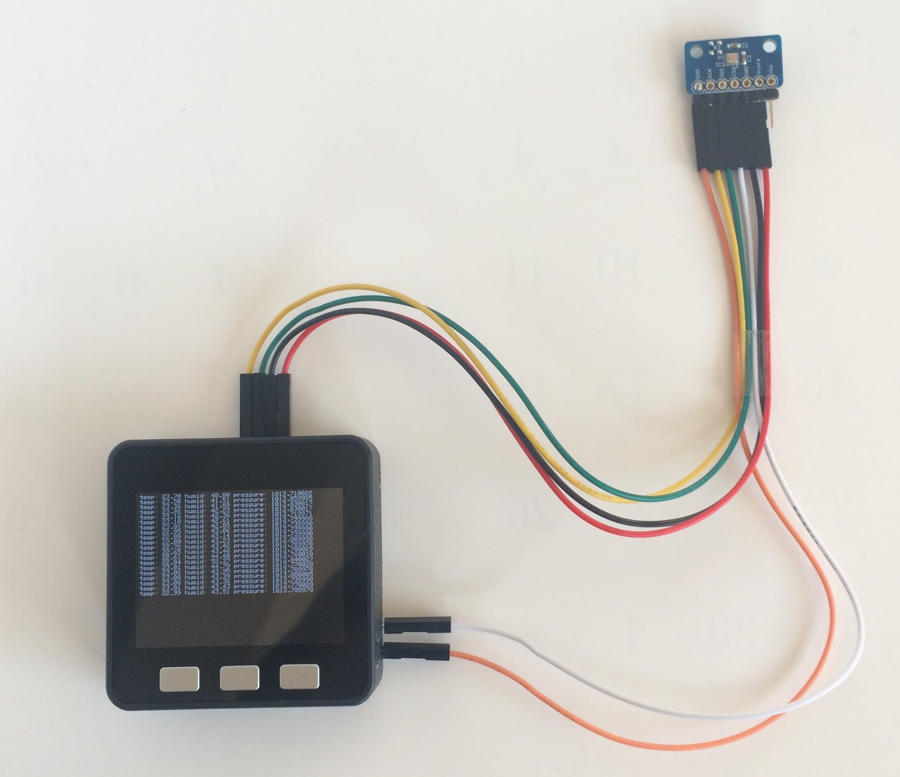
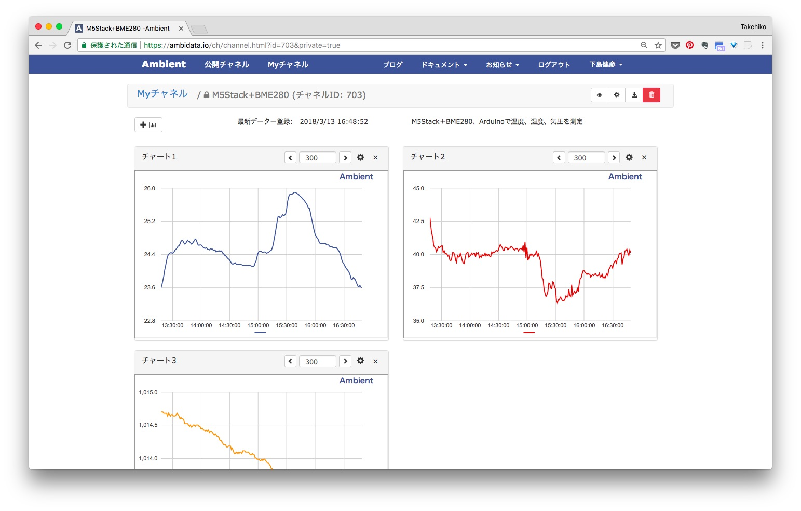

「AmbientでIoTをはじめよう」の第3回は最近スイッチサイエンスでも取り扱いを始めたM5Stackを使い、 センサデータをクラウドに送信して記録する事例を紹介します。
M5StackはArduinoとMicroPythonとEspressif社のESP-IDFという開発環境が使えます。 ここではArduinoで制御する例を紹介します。 MicroPythonで制御する例は「M5Stackでセンサデータを測定し、クラウドに送る (MicroPython編)」をご覧ください。

M5StackはEspressif社のマイコンESP32が搭載されたコンパクトなIoT端末です。 ESP32と電池、320 x 240 TFTカラーディスプレイ、microSDカードスロット、スピーカーなどが搭載されたM5Stack Basicがベースになる製品です。 ESP32が搭載されているのでWi-FiとBluetoothで通信でき、SPI、I2Cでセンサなどを制御できます。 5.4cm x 5.4cmのコンパクトなケースに入っていて、拡張モジュールを積み重ねることで機能を追加できます。
Basicの写真M5Stack Basicに加速度、ジャイロ、磁気を計測可能な9軸センサ、MPU9250を加えたM5Stack Gray（9軸IMU搭載）という製品や、 GPSモジュールやユニバーサル基板モジュールといった拡張モジュールがあります。
詳細は次のサイトをご覧ください。
クラウドサービスは、簡単にIoTデータの可視化ができる「Ambient」を使います。
空気品質センサをスイッチサイエンスのサイトで調べると、4件ヒットします(2018年2月現在)。今回はこの中でCCS811というガスセンサを搭載した「CCS811搭載 空気品質センサモジュール」を使うことにします。
スイッチサイエンスのサイトによるとCCS811は「二酸化炭素相当物（eCO2） および金属酸化物（MOX）レベルを含む、総揮発性有機化合物（TVOC）を感知するデジタルガスセンサモジュール」とのことです。
CCS811は空気品質を測定する際に温度と湿度を使って測定値の補正をおこないます。モジュール上にオプションでサーミスタ(温度によって抵抗値が変化する素子)がつけられるようになっていて、簡単に温度が測定できます。しかし、どうせならある程度精度の高い温度、湿度データも合わせて測定したいので、前回の「温度、湿度、気圧を測定し、記録する」で使った温湿度、気圧センサBME280も使うことにします。
マイコンは「ESPr Developer」です。Arduinoでプログラミングできて、Wi-Fiモジュールが搭載されているので、センサを制御してクラウドにデータを送信するようなシステムには非常に適しています。
センサ端末に必要な部品をまとめました。
| 部品 | 個数 |
|---|---|
| CCS811搭載 空気品質センサモジュール | 1個 |
| BME280搭載 温湿度・気圧センサモジュール | 1個 |
| ESPr® Developer (ESP-WROOM-02開発ボード) | 1個 |
| 細いピンヘッダ 20P | 2個 |
| 普通のブレッドボード | 1個 |
| 固いジャンパワイヤ (ブレッドボード用) | 1個 |
空気品質センサCCS811はI2Cインタフェースに対応しています。温度・湿度・気圧センサのBME280はI2CとSPIという二つのインタフェースに対応していますが、今回はCCS811に合わせてBME280もI2Cでアクセスします。I2Cインタフェースで複数のデバイスにアクセスするには、次の図のようにマイコンとデバイスのSCLピン同士、SDAピン同士を接続し、それぞれ数kΩの抵抗でプルアップ(電源に接続)します。

ESPr Developerに搭載されているESP8266は好きなGPIOピンをI2C接続に使えます。今回はIO14をSCLに、IO13をSDAにしました。
回路図は次のようになります。「CCS811搭載 空気品質センサモジュール」にはI2C通信用にSCL、SDAのプルアップ抵抗が載っているので、外付けのプルアップ抵抗は不要です。

回路図を基にブレッドボード上に組み立てたセンサ端末の例です。BME280モジュール、CSS811モジュールともにセンサをブレッドボードから離して設置したかったので、L字型のピンヘッダを使っています。

まずセンサ端末の動作確認をします。Arduino開発環境の準備とAmbientライブラリのインストールについては前回の記事の「Arduino開発環境の準備」と「Ambientライブラリとサンプルプログラムのインストール」をご覧ください。
CCS811のライブラリはモジュールを提供しているSparkFun社のものを使いますが、そのままだとESP8266のArduinoでは動かないので、一部修正を加えています。動作確認用のプログラムと合わせてGithubに置きました。
このページ右上の「Clone or download」の「Download ZIP」をクリックしてZIPファイルをダウンロードし、適当なフォルダに展開して使ってください。

examples/CCS811_testがセンサ端末の動作確認プログラムです。
SparkFunのCSS811ライブラリには主に次の機能があります。
| 関数 | 説明 |
|---|---|
| status begin(void); | CSS811を初期化する。この関数の中でCSS811の動作モードの設定などがおこなわれる。 |
| bool dataAvailable(void); | データが読み出し可能かチェックする。 |
| status readAlgorithmResults(void); | CO2とTVOC(総揮発性有機化合物)の値をCSS811から読み出す。 |
| uint16_t getCO2(void); | CO2の値を返す。 |
| uint16_t getTVOC(void); | TVOCの値を返す。 |
この他に次の三つの関数を作りました。
| 関数 | 説明 |
|---|---|
| void ccs811_hw_reset(void); | CCS811をリセットする。 |
| void ccs811_wake(void); | I2C通信を可能にする。 |
| void ccs811_sleep(void); | I2C通信を停止する。 |
動作確認プログラムでは、readCCS811()という関数でCCS811のCO2とTVOC(総揮発性有機化合物)の値を読んでいます。実際に動かしてみると、データが読み出し可能にならない場合があったので、3秒以上読み出し可能にならない場合はCCS811をリセットして初期化するようにしています。
また、CCS811のデータシートによると、CO2の値は400から8,192の間の値と書かれていますが、これも実際に動かして値を見てみると、この範囲を外れた値が読めることがありました。範囲を外れた値が読めた場合はその値を捨てて、読み直すようにしています。
プログラム全体はダウンロードしたファイルをご覧ください。
プログラムをビルドして、動かし、次のようにCO2とTVOCの値が表示されればセンサ端末のハードウェアはOKです。

表示されない場合はESPr DeveloperとCCS811、BME280の接続や、Arduio IDEの設定などを確認してください。
まず、前回の記事の「Ambient側の準備」を参考にして、Ambientのユーザー登録とチャネル生成をしてください。
プログラムは先程Githubからダウンロードした中のexamples/Ambient_CCS811_BME280です。loop()処理は次のようになっています。
まず、BME280で温度、湿度、気圧を測定し、BME280で読んだ温度、湿度の値を使ってCCS811でCO2、TVOCの値を測定し、補正しています。最後にAmbientに温度、湿度、気圧、CO2、TVOCの値を送信しています。
ssidとpasswordをお使いのWi-Fiルータに合わせて変更し、channelIdとwriteKeyにAmbientで作ったチャネルのIDとライトキーを設定します。プログラムをビルドして動かすと、測定した温度、湿度、気圧、CO2、TVOCの値がAmbientに送信され、次のように表示されます。グラフはカスタマイズしていて、気温と湿度を一つのグラフにまとめて表示しています。

CCS811のデータシートによると、CCS811には五つの測定モードがあります。
| モード | 説明 |
|---|---|
| モード0 | アイドルモード。低消費電流。 |
| モード1 | 1秒毎に測定。 |
| モード2 | 10秒毎に測定。 |
| モード3 | 60秒毎に測定。 |
| モード4 | 250m秒毎に測定。 |
今回のプログラムではセンサはモード1に設定してあり、1秒毎に空気品質を測定しています。モード設定はCCS811ライブラリの初期化関数begin()の中でおこなっています。マイコンは60秒毎にセンサの値を読み出してクラウドに送信しています。
データシートによると、モードを設定、変更してから測定値が安定するまで20分かかります。つまり、CCS811の初期化関数begin()を呼んでから20分間は値が安定していないので、注意が必要です。
さらに、データシートによると最初に48時間のエージングが推奨されており、設置してから測定値が安定するまでに48時間かかるとのことです。
ESP8266で周期的にセンサデータを測定するアプリケーションでは、消費電力を減らすために、Deep Sleepがよく使われます。ESP8266ではWi-Fiモジュールが動いている時は70〜150mA程度の電流を消費しますが、Deep Sleep中は1mA以下になるためです。
ESP8266はDeep Sleepから復帰する時に、CPUにリセットがかかり、プログラムが先頭から実行されます。そこでDeep Sleepを使った周期的なプログラムは次のような構造になります。
ESP8266でDeep Sleepを使った周期的なプログラムでは、毎回センサを初期化してしまいます。CCS811を使う場合、CCS811は毎回初期化され、いつも値が不安定な状態になります。そこで、今回はDeep Sleepを使わず、次のようにsetup()関数の中でCCS811を初期化し、loop()関数の中で周期的にCCS811を読むようにしています。
二酸化炭素などの空気品質データは温度、湿度と合わせてオフィスや住環境の基本データです。集中力など作業効率に影響するといわれています。マイコンもセンサも安価なものが使えるようになったので、オフィスなどであれば複数の場所にセンサ端末を設置し、一年を通して測定、記録することで、場所や季節による環境の差などを定量的に把握し、作業効率の改善に役立てることもできると思います。
IoTでは、実際のデータで現状把握することが重要です。データによる現状把握に、この記事がお役に立てたら嬉しい限りです。
この記事はアンビエントデーターの下島が担当しました。